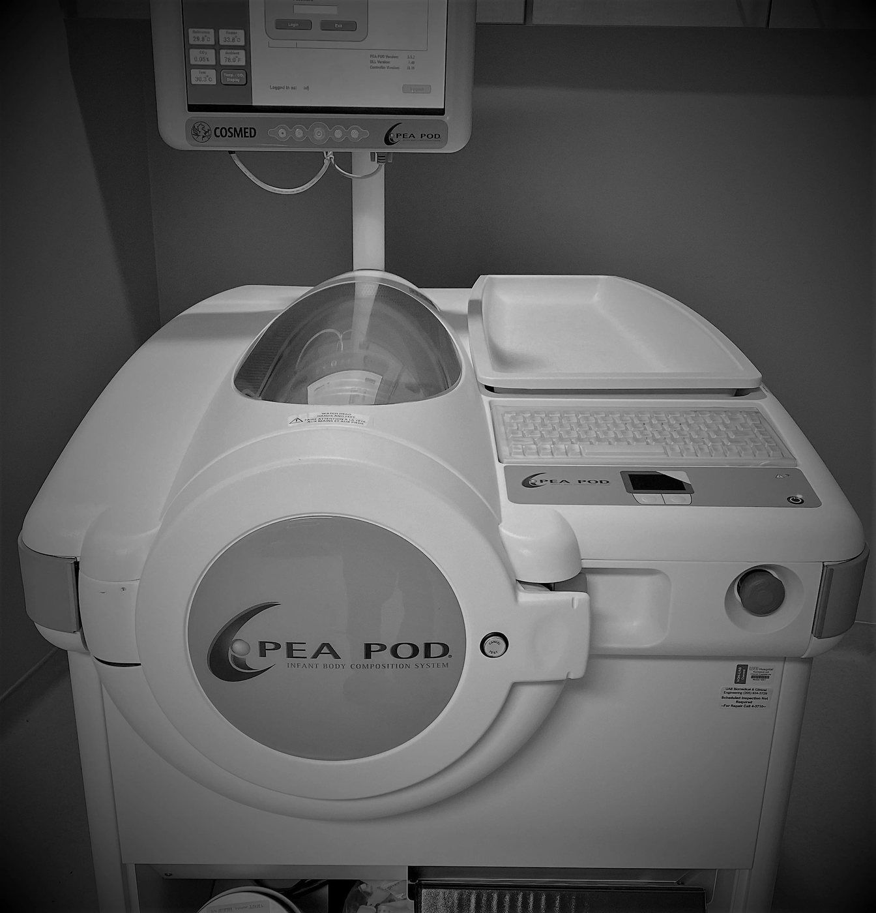

Body Composition Measurements
PeaPod®
We measured body fat mass and body fat-free mass for our studies placing your baby in a small machine called a Peapod®. The inside of the Peapod® is warm and quiet and has a clear door so that the baby can see and hear us while being scanned for approximately two minutes. Your baby will breathe the normal room air in the room and the amount of space the baby takes up inside the Peapod® will be used to measure the amount of body fat.
There are no proven risks for having body fat measured using the Peapod®. During the two minutes that your baby is being scanned, a nurse will watch for any potential changes in clinical status and scanning will be stopped if not tolerated. There is the potential for brief discomfort from having clothing and diapers removed and a hat placed to hold any hair down. Your baby will also be monitored closely during the transport to and from the Peapod® room for any signs of potential changes in clinical status.

D3 creatine dilution method
The D3-creatine (D3Cr) dilution method is a noninvasive assessment of muscle mass in neonates. This method requires administration of a 2 mg enteral dose of D3 creatine and a urine sample.